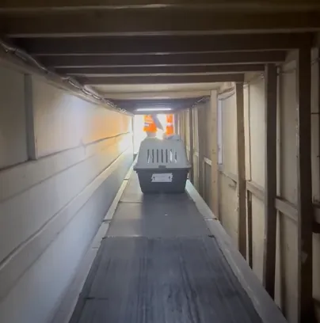
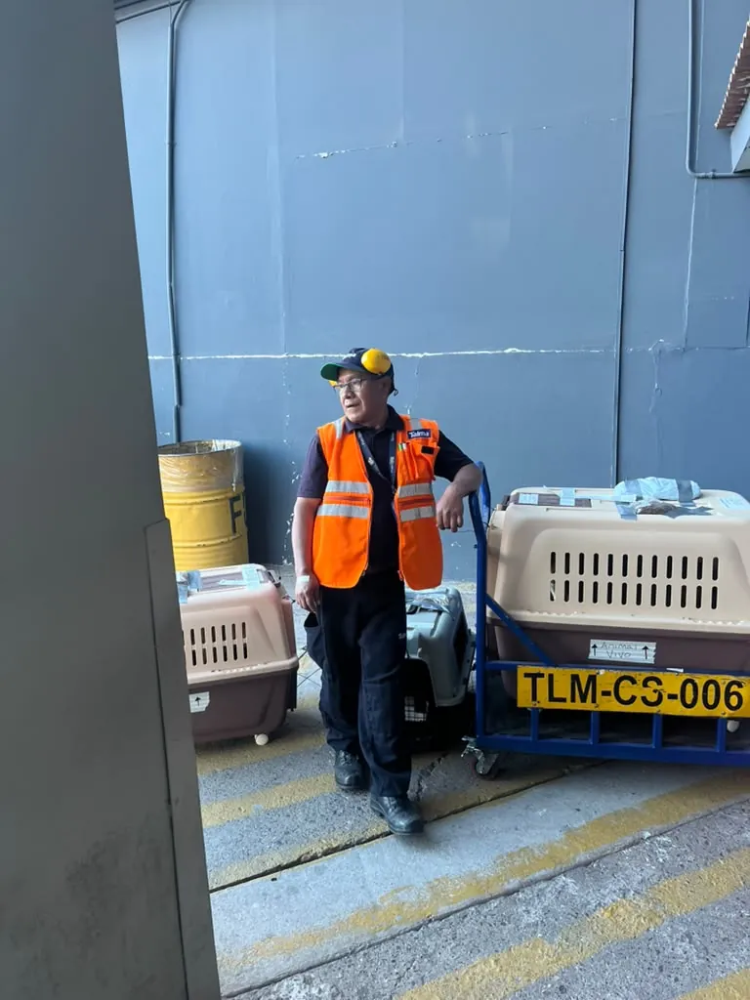
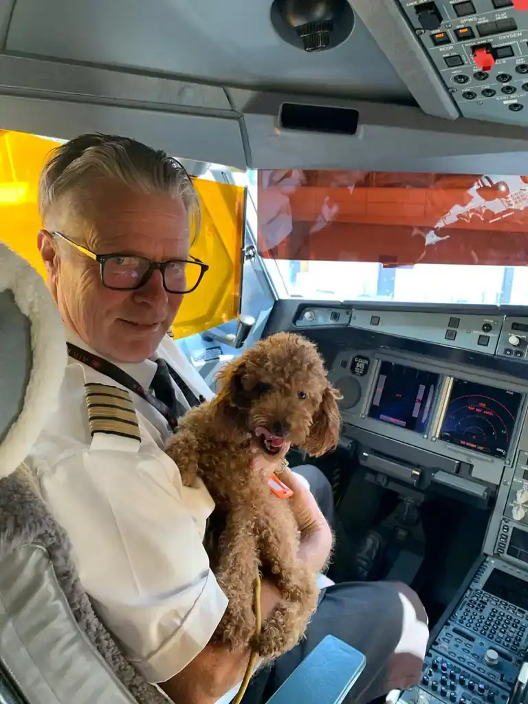

Chiens et chats en soute d'avion : ce que disent l'IATA, l'AVMA et les données officielles
Ce n'est pas ce que nous en pensons. C'est ce que disent la réglementation américaine, l'IATA, l'Association américaine de médecine vétérinaire et les données du gouvernement. Nous les avons réunies, vérifiées et traduites. Les voici, avec chaque source citée.
D'où vient la peur
Presque tous ceux qui nous écrivent commencent par la même phrase : « j'ai entendu dire que là-dedans, ils souffrent. » Nous comprenons. Il est difficile de confier un membre de sa famille à un endroit qu'on ne peut pas voir. Mais l'image que presque tout le monde imagine — le chien coincé entre des valises, dans une caisse plongée dans le noir, tremblant — ne décrit pas la façon dont les animaux voyagent réellement. Elle décrit la façon dont nous nous l'imaginons.
Nous n'allons pas vous demander de nous croire sur parole. Nous allons vous montrer ce que disent les sources qui font autorité en la matière : la réglementation aérienne des États-Unis, l'Association internationale du transport aérien (IATA), l'Association américaine de médecine vétérinaire (AVMA) et les rapports du Département des transports des États-Unis (US DOT). Chaque donnée de cette page est accompagnée de sa source. Si une information n'a pas de source, nous ne l'écrivons pas.
Ce qu'est vraiment la « soute » d'un avion
D'abord, une précision qui change tout : il n'existe pas une seule soute. Un avion possède plusieurs compartiments de fret, et les animaux vivants ne voyagent pas dans celui du fret général. Ils voyagent dans un espace dédié que la loi oblige à maintenir dans trois conditions précises.

Pression
La réglementation fédérale américaine 9 CFR §3.16, qui fixe les conditions de transport des chiens et des chats, exige que l'espace de fret réservé aux animaux soit pressurisé en vol, sauf lorsque l'avion vole en dessous de 8 000 pieds. En pratique : votre animal respire avec la même pression d'air que vous à votre siège.
Température
La même réglementation interdit d'exposer les chiens et les chats à des températures supérieures à 29,5 °C (85 °F) ou inférieures à 7,2 °C (45 °F) pendant plus de quatre heures, et à moins de 45 minutes lors des trajets vers et depuis l'avion. C'est pourquoi, lorsqu'à un moment de votre itinéraire les prévisions sortent de cette fourchette, les compagnies aériennes ne font pas voyager d'animaux : elles appliquent des embargos saisonniers et préfèrent annuler plutôt que prendre un risque.
Arrimage et séparation des bagages
La caisse de transport n'est empilée avec rien. Elle est fixée avec des filets et des sangles pour qu'elle ne bouge pas, même en cas de turbulence, dans une section réservée uniquement aux animaux vivants, séparée du fret général. Elle est enregistrée à part, manipulée par du personnel formé au transport d'animaux vivants, chargée en dernier et débarquée en premier. L'équipage sait avant le décollage que des animaux sont à bord, afin de gérer le flux d'air de cette zone pendant tout le vol.

Et à propos du bruit et de l'obscurité qui font si peur, il vaut la peine de lire ce qu'écrit l'IATA elle-même — la plus haute autorité mondiale du transport aérien, pas une compagnie aérienne qui cherche à vendre un vol — dans son guide officiel destiné aux propriétaires d'animaux :
« Certaines compagnies aériennes les transporteront comme bagage spécial dans une soute chauffée et ventilée. Ne vous inquiétez pas : les chiens et les chats voyagent en réalité mieux ainsi, car c'est plus calme et ils se reposent dans un environnement sombre. » — IATA, Traveler's Pet Corner, Container Requirement CR1, édition Live Animals Regulations 2026 (notre traduction de l'original en anglais). Vérifié le 16 juillet 2026.

Les chiffres, et d'où ils viennent
La peur se répond avec des données, et ici la donnée vient du gouvernement, pas d'une association du secteur. Le Département des transports des États-Unis (US DOT) oblige par la loi les compagnies aériennes à déclarer chaque décès, blessure ou perte d'un animal, et publie les totaux annuels via le Bureau of Transportation Statistics (BTS).
En 2025, les compagnies aériennes américaines ont transporté 117 861 animaux. On a recensé 3 décès, 5 blessures et 1 perte : le taux officiel du DOT lui-même était de 0,76 incident pour 10 000 animaux. Autrement dit, 99,997 % sont arrivés sans le moindre décès et 99,99 % sans aucun incident. Et ce sont moins de décès qu'en 2024 (10 sur 161 335) : la donnée s'améliore d'année en année.
Source : US DOT, Air Travel Consumer Report, tableau annuel des animaux de l'année civile 2025 (rapport de février 2026, p. 56, déclaration obligatoire 14 CFR Part 235). Vérifié le 16 juillet 2026.
Et il existe une comparaison qui aide à relativiser. Les chevaux de compétition olympique — des animaux d'une demi-tonne qui valent des millions — traversent la moitié du globe dans ce même type de compartiment climatisé, sous la même IATA Live Animals Regulations. Aux Jeux de Tokyo 2020, 247 chevaux ont voyagé en avion, beaucoup via Liège dans un Boeing 777 cargo d'Emirates. Une soigneuse qui accompagnait les chevaux belges l'a décrit au magazine The Horse : « pour la plupart, voler est très calme… ils s'agitent beaucoup moins que dans un camion. Les miens ont dormi presque tout le trajet. » Si le système est sûr pour un cheval de saut d'obstacles, il l'est pour un chien dans sa caisse.
Les risques réels, et qui les a étudiés
Il existe un risque. Il serait malhonnête de dire le contraire, et de plus il est mesuré. Ils sont au nombre de trois, étroits, et documentés par des autorités vétérinaires, pas par nous.
1. Les races au museau court (brachycéphales)
Bouledogue, carlin, boston terrier, boxer, persan. Leur anatomie respire moins bien sous stress et sous la chaleur, et cela leur arrive aussi au sol. L'AVMA (American Veterinary Medical Association) le chiffre : « au cours des cinq dernières années, environ la moitié des 122 décès de chiens associés à des vols concernaient ces races au museau court. » Le US DOT lui-même l'a confirmé dès 2010, et une étude évaluée par des pairs, publiée dans les NIH (Jahn et al., 2023), analyse la façon dont les chiens tolèrent le vol. C'est pourquoi de nombreuses compagnies aériennes n'acceptent pas les brachycéphales en période de chaleur. Dans notre propre enquête clinique, nous avons documenté pourquoi la physique joue contre eux : nous l'expliquons dans la fiche du bouledogue français.
2. Le temps au sol
Le seul moment où l'animal est en contact avec l'air extérieur, ce sont les minutes de chargement et de déchargement sur le tarmac de l'aéroport. C'est la véritable fenêtre de risque — pas le vol —, et c'est exactement celle que la norme encadre : le 9 CFR limite à 45 minutes l'exposition pendant les trajets vers et depuis l'avion. C'est pourquoi un bon agent calcule l'heure du vol et la température du jour, pas seulement la date.
3. La sédation
C'est l'erreur la plus dangereuse, et elle est souvent commise avec de bonnes intentions. On ne sède pas, et ce n'est pas nous qui le disons. Ce sont trois autorités vétérinaires à la fois. L'AVMA : « consultez votre vétérinaire avant de donner un tranquillisant ou un sédatif ; ils peuvent augmenter le risque de problèmes cardiaques ou respiratoires. » L'Association vétérinaire australienne (AVA) : « la sédation n'est pas recommandée. » Et l'IATA, qui explique le pourquoi physiologique : les tranquillisants font baisser la pression artérielle, un effet qui se produit aussi naturellement en altitude, et privent l'animal de sa capacité à maintenir une posture sûre. Un chien sédaté pendant un vol est en plus grand danger, pas en moins.
La frayeur ne vient presque jamais de la soute. Elle vient d'une caisse de transport mal dimensionnée, d'un animal mal acclimaté ou d'une sédation que personne n'aurait dû administrer. Ces trois éléments sont sous le contrôle de celui qui prépare le voyage, pas de l'avion.
Quelles compagnies aériennes ont la certification IATA CEIV Live Animals
Respecter les IATA Live Animals Regulations (LAR) est le minimum : presque toutes les grandes compagnies aériennes le font. Au-dessus, il existe un échelon audité et exclusif, le CEIV Live Animals (Center of Excellence for Independent Validators), lancé par l'IATA en 2018, qui vérifie sur place qu'une compagnie respecte le plus haut standard de bien-être animal.
Personne ne nous a payés pour cela. Aucune compagnie aérienne ne sponsorise cette liste. Nous l'avons construite parce que, en plus de treize ans à envoyer des chiens et des chats à travers le monde, c'est la question qui angoisse le plus les familles : « et si quelque chose lui arrivait là-dedans ? ». C'est aussi l'une des plus difficiles à répondre : il existe très peu d'informations publiques claires et organisées sur quelle compagnie aérienne respecte réellement le plus haut standard.
Nous nous sommes donc assis pour la clarifier nous-mêmes. Nous avons vérifié compagnie par compagnie, en croisant leur annonce officielle et le registre IATA One Source, et nous avons noté ce que nous avons trouvé, avec sa date. Quand une compagnie ne l'a pas, nous le disons quand même — même s'il s'agit d'une compagnie que nous apprécions. Nous préférons être utiles plutôt que bien paraître.
À juillet 2026, nous avons vérifié huit compagnies aériennes cargo avec la certification CEIV Live Animals en vigueur. Voici notre tableau, avec ce que nous avons trouvé et sa source :
| Compagnie aérienne cargo | CEIV Live Animals | Ce que nous avons vérifié | Source |
|---|---|---|---|
| Air Canada Cargo | Oui | La première compagnie aérienne au monde à l'obtenir, en 2018. | World Airline News, 2018 |
| Avianca Cargo | Oui | Certifiée en septembre 2023, complétant les quatre certifications CEIV de l'IATA. | Cargo Trends, 2023 |
| Lufthansa Cargo | Oui | Certifiée en septembre 2023. Exploite l'Animal Lounge de Francfort, assuré 24h/24 et 7j/7 par des soigneurs et des vétérinaires. | Cargo Newswire, 2023 |
| Qatar Airways Cargo | Oui | Certifiée, avec une installation dédiée aux animaux vivants à Doha. | Air Cargo News |
| Turkish Cargo | Oui | A obtenu toutes les certifications CEIV de l'IATA, y compris Live Animals. | IATA / presse sectorielle |
| Cathay Cargo | Oui | La compagnie et son terminal cargo, tous deux accrédités CEIV Live Animals. | Cathay Cargo |
| EVA Air Cargo | Oui | Quatrième certification CEIV de la compagnie, obtenue en 2025. | EVA Air, 2025 |
| SriLankan Cargo | Oui | Première compagnie aérienne de sa région à l'obtenir. | SriLankan Airlines |
| LATAM Cargo | Non attestée | Transporte des animaux vivants et détient les certifications CEIV Pharma et Li-batt, mais à juillet 2026, la certification CEIV Live Animals n'est pas attestée. Respecte les IATA LAR, le standard général. | IATA One Source |
Enquête propre, vérifiée à partir de l'annonce officielle de chaque compagnie aérienne et du registre IATA CEIV Live Animals / IATA One Source. Dernière vérification : 16 juillet 2026. C'est une liste vivante : si une compagnie aérienne obtient ou perd la certification, nous mettons à jour ce tableau et changeons la date ci-dessus. Si vous repérez une information obsolète, écrivez-nous et nous la corrigerons.
Avant l'embarquement, exigez ceci
Vous n'avez pas besoin de faire confiance les yeux fermés. Voici les questions exactes que pose un propriétaire informé avant de confier son animal. Copiez-les et utilisez-les avec votre agent ou votre compagnie aérienne.
- La compagnie aérienne respecte-t-elle les IATA Live Animals Regulations ? (Le minimum. Toute compagnie membre de l'IATA devrait le respecter.)
- Détient-elle aussi la certification IATA CEIV Live Animals ? (Le standard d'excellence audité. Consultez le tableau ci-dessus.)
- Quel est le poids maximal en soute et quelles races sont restreintes sur mon itinéraire exact ?
- Y a-t-il un embargo saisonnier lié à la température à mes dates de voyage ?
- Me confirme-t-on que mon animal voyage dans le compartiment pressurisé et climatisé, et non en fret général ?
Si votre interlocuteur ne sait pas répondre à ces cinq questions, vous savez déjà avec qui ne pas voyager. Un professionnel sérieux y répond sans hésiter.
Votre animal a un voyage devant lui ?
Nous calculons son itinéraire, sa caisse homologuée et ses délais, et nous vous disons la vérité — même si cela signifie qu'il ne convient pas encore de voler. Sans frayeurs et sans fumée.
Comment nous travaillons le fret Calculez la caisse de votre animalQuestions fréquentes
La soute d'un avion est-elle pressurisée pour les animaux de compagnie ?
Oui. La réglementation américaine 9 CFR §3.16 exige que l'espace de fret réservé aux animaux soit pressurisé en vol, sauf en dessous de 8 000 pieds. Votre animal respire avec la même pression que la cabine passagers.
Les chiens et les chats souffrent-ils du froid ou de la chaleur en soute ?
Non, tant que la réglementation est respectée. Le 9 CFR interdit de les exposer à plus de 29,5 °C ou moins de 7,2 °C pendant plus de 4 heures. Quand les prévisions sortent de cette fourchette à un moment de l'itinéraire, les compagnies aériennes appliquent des embargos et ne font pas voyager d'animaux.
Est-il dangereux que mon chien voyage en soute ?
Les données officielles du US DOT disent que non : en 2025, sur 117 861 animaux transportés aux États-Unis, on a recensé 3 décès ; 99,997 % sont arrivés sans le moindre décès et 99,99 % sans aucun incident. Selon l'AVMA, près de la moitié des décès enregistrés concernent des races au museau court, et non les conditions de la soute.
L'animal voyage-t-il avec les bagages ?
Non. Il voyage dans une section réservée aux animaux vivants, avec la caisse de transport arrimée, séparée des bagages. Il est chargé à part, débarqué en premier, et l'équipage sait qu'il est à bord.
Dois-je sédater mon animal pour le vol ?
Non. L'AVMA, l'Association vétérinaire australienne et l'IATA le déconseillent : les sédatifs font baisser la pression artérielle — un effet qui s'ajoute à celui de l'altitude — et privent l'animal de sa capacité à se réguler et à maintenir une posture sûre.
Sources de cette page
- IATA — Traveler's Pet Corner (Container Requirement CR1, Live Animals Regulations, édition 2026).
- USDA APHIS — 9 CFR Part 3, Subpart A (pressurisation, température et transport des chiens et des chats).
- US DOT — Air Travel Consumer Report, tableau annuel des animaux de l'année civile 2025 (rapport de février 2026, p. 56 ; déclaration obligatoire 14 CFR Part 235).
- AVMA — Air travel and short-nosed dogs FAQ (races brachycéphales et mortalité).
- AVMA — Traveling With Your Pet (sédation et tranquillisants).
- Australian Veterinary Association — Medication of dogs and cats for air transport (sédation non recommandée).
- Jahn K et al. (2023) — How Well Do Dogs Cope with Air Travel? NIH / PMC (étude évaluée par des pairs).
- Certifications CEIV Live Animals : annonces officielles de chaque compagnie aérienne et registre IATA One Source.